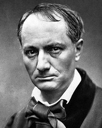

Шарль Бодлер
Роки життя: 1821−1867
Читати:
У 6-літньому віці втратив батька, учасника Великої французької революції. Матір незабаром вийшла заміж за майора Опіка, майбутнього генерала, посла та сенатора. Таке швидке заміжжя матері завдало Бодлеру душевної травми: у хлопчика склалися напружені стосунки з вітчимом, його відправили в пансіон у Ліоні, згодом віддали в ліцей Людовіка Великого, де він зазнавав частих нападів меланхолії. Бодлер закінчив ліцей, але від службової кар'єри відмовився. З 1839 по 1841 pp. вів дозвільний спосіб життя літературної богеми в Латинському кварталі Парижа. Познайомився з Л. де Лілем, П. Дюпоном, багато читав. Улюбленими авторами стали Т. Готьє і Ж. де Местр. Стривожена бешкетною поведінкою сина, сім'я вирішила відправити його вчителювати на о. Бурбон в Індійському океані (1841). Ностальгія змусила Бодлера навесні 1842 р. повернутися в Париж.
На 40-і роки припадає початок літературної діяльності Бодлера. Він публікує статті та окремі вірші, брошури. З-поміж них найцікавішими є «Салон 1845року»(«Le salon de 1845», 1845) і «Салон 1846 року» («Le salon de 1846», 1846), де Бодлер виявив себе талановитим художнім критиком. Бодлер брав активну участь у революції 1848 p., бився на барикадах, видавав газету «Суспільний порятунок».
У 1846-1847 pp. Бодлер відкрив для себе Е. По, талант якого вважав спорідненим за духом. Перекладав новели Е. По французькою мовою.
У 1852 р. опублікував статтю «Язичницька школа» («L'ecole paienne»), у якій критично оцінив творчість парнасців, їхню відданість теорії «мистецтво для мистецтва».
Найзначнішим твором Бодлера стала поетична збірка «Квіти зле» («Les fleurs du mal», 1857), яка спричинилася до судового процесу проти поета зі звинуваченням в «аморальності». Бодлер змушений був вилучити з першого видання 6 поезій. У 1861 р. вийшло друком друге видання книжки, доповнене 35 новими поезіями.
У 1864 р. безгрошів'я спонукало Бодлера відправитись у Бельгію з читанням лекцій. Лекції успіху не мали. Бодлер написав «Маленькі поеми в прозі» («Petits poemes en prose», 1869; вид. посмертно), вирішивши не повертатися у Францію, поки не доб'ється успіху та визнання.
4 лютого 1866 р. під час відвідин церкви Сен-Лу в Намюрі Бодлер знепритомнів. Паралізованого і з втраченим даром мови, його перевезли в Париж, де він і помер 31 серпня 1867 р.
Окрім ліричних поезій, перу Бодлера належать збірка статей «Романтичне мистецтво» («L'art romantique», 1846—1868, вид. посмертно) і трактат про наркотики «Штучний рай» («Les paradis artificiels», 1860).
Творчість Бодлера справила вплив на таких різних майстрів слова, як поета авіньйонської школи Т. Обанеля, бельгійця І. Белькена, символістів П. Вердена, А. Рембо, С. Малларме, одного із «батьків» модернізму М. Пруста, метра сюрреалізму Т. Тзара, французьких поетів XX ст. П. Реверді, П. Елюара, А. Френо.
А. Рембо писав: «Бодлер... — це король поетів, справжній Бог». Бодлер стоїть біля витоків французького символізму. Його манері притаманна загострена сприйнятливість у поєднанні з прагненням до максимальної точності в зображенні найпохмуріших моментів внутрішньої реальності.
Бодлер одним із перших увів у французьку поезію урбаністичну тему. В одному з листів він писав: «У цю жорстоку книгу я вклав увесь свій розум, усе своє серце, свою віру і ненависть».
Назва збірки підкреслює її головну думку — привабливість зла для сучасної людини. Ліричний герой Бодлера роздвоєний: він розривається між ідеалом духовної краси та красою зла («Хвора муза», «Ідеал», «Гімн красі»). Зло стало об'єктом художнього дослідження в Бодлера. Поет розглядає його як специфічну форму добра («Відповідності», «Гра», «Одержимий»).
Ця роздвоєність бодлерівського героя поміж добром і злом породжує почуття нудьги, прагнення вирватись у «невідоме», спрагу безмежного («Піднесення», «Вампір», «Музика», «Сплін»).
Поет для Бодлера — безрідний і незрозумілий юрбою «чужинець», якого вона мучить і ненавидить. На поеті — печать знехтуваності. На відміну від А. де Віньї («Мойсей»), Бодлер приймає цю долю («Благословення», «Альбатрос»), оскільки вона — знак обраності. Поет своєю інтуїцією передчуває відповідність між матеріальним і духовним світами («Відповідності», «Маяки»). Лише вийшовши за межі реальності і за межі свого «я», поет звільняється від гнітючої нудьги («Сонце», «Лебідь», «Сім старих», «Старі жінки»). Таким чином, Бодлер доповнює романтичну антитезу «поет-натовп», створюючи образ генія, котрий на певний час зливається з натовпом і проймається його настроями та бідами.
Вічне бодлерівське балансування між верхом і низом приводить в його поетиці до взаємопроникнення високого і низького, до поєднання непоєднуваного в межах одного образу, до естетизації потворного («Падло»).
У бодлерівському образі починається стирання грані між суб'єктом та об'єктом, між уявним і реальним. У поезії «Кіт» виникає такий химерний та незвичайний образ:
Десь, начебто в своїй оселі,
В моєму мозку ходить кіт,
Міцний, чудовий кіт, а хід
Його м'який, мов на фланелі.
(Пер. Д. Павличка)
Цей образ набув двоплановості та багатозначності. Тут зовнішній план, уявлення про кота, який безтурботно прогулюється, натякає, вказує на його глибинний план: якісь спогади, почуття, переживання, непередавані безпосередньо.
Важливим відкриттям Бодлера було визнання за поетичним словом сугестивної функції. Нерідко в Бодлера слова і поєднання слів позбавляються точного логічного значення, спричиняючи несподівані асоціації, непевні уявлення, невизначені настрої.
Бодлер вносить нові відтінки в трактування традиційної любовної теми. Кохання для Бодлера, як і мистецтво, — один із засобів для подолання нудьги. Переживання кохання забарвлене гостротою і тонкістю чуттєвих відчуттів («Екзотичний аромат», «Танець змії», «До перехожої») і водночас напруженою духовністю, яка межує з куртуазним обожненням коханої («Спокута», «Моїй Мадонні»). Кохання трагічне і майже завжди приховує в собі гріх і смерть.
Смерть — останнє пристановисько для тих, хто одержимий безмежним, хто не бажає змиритися з посередністю і вульгарністю земного буття. Смерть — плавба в невідоме, перехід у новий стан, віднайдення новизни, яку завжди і в усьому шукав геній Бодлера. («Плавба», «Безодня»). Війонівський жах перед розпадом і розкладом поєднується в Бодлера з ваблячою можливістю вийти за межі, злитися з вічністю, яку дарує смерть.
У своєму переживанні трагізму буття, у спрямованості до Ідеалу і гострому відчутті розладу між ідеалом і дійсністю, в конкретності, речевості свого поетичного бачення Бодлера продовжував романтичні традиції французької поезії. Проте романтичний конфлікт мрії і дійсності набуває в нього глибокого внутрішнього характеру, переживається як загадкове і болісне роздвоєння самої особистості, для вираження якого потрібні були нові художні засоби, нова поетична мова.